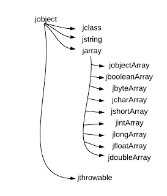

JNI命名规范，介绍数据类型等。
基本数据类型
| Java类型 | 本地类型（JNI） | 描述 | 域描述符 | | -: | :- | -: | :-: | | boolean | jboolean | unsigned 8bits | Z | | byte | jbyte | signed 8bits | B | | char | jchar | unsigned 16bit | C | | short | jshort | signed 16bits | S | | int | jint | signed 32bits | I | | long | jlong | signed 64bits | J | | float | jfloat | 32bits | F | | double | jdouble | 64bits | D | | void | void | N/A | V |
jobject，对象，引用类型

引用类型，域描述符为 L+该类型类描述符+; - 如String类型的域描述符为：Ljava/lang/String;
数组，域描述符为[+该类型域描述符+. - 如int[]域描述符为[I - 如int[][]域描述符为[[I - 如String[]描述符为[Ljava/lang/String;
本地方法名的组成： 1. 前缀Java_ 2. 完整类名，.用代替 3. 下划线 4. 方法名，特殊字符需要转义 5. 参数签名
类型转换
jbytearray转C++byte数组
jbyte * arrayBody = env->GetByteArrayElements(data,0);
jsize theArrayLengthJ = env->GetArrayLength(data);
BYTE * starter = (BYTE *)arrayBody;
jbyteArray 转 c++中的BYTE[]
jbyte * olddata = (jbyte*)env->GetByteArrayElements(strIn, 0);
jsize oldsize = env->GetArrayLength(strIn);
BYTE* bytearr = (BYTE*)olddata;
int len = (int)oldsize;
C++中的BYTE[]转jbyteArray
jbyte *by = (jbyte*)pData;
jbyteArray jarray = env->NewByteArray(nOutSize);
env->SetByteArrayRegin(jarray, 0, nOutSize, by);
jbyteArray 转 char *
char* data = (char*)env->GetByteArrayElements(strIn, 0);
char* 转jstring
jstring WindowsTojstring(JNIEnv* env, char* str_tmp)
{
jstring rtn=0;
int slen = (int)strlen(str_tmp);
unsigned short* buffer=0;
if(slen == 0)
{
rtn = env->NewStringUTF(str_tmp);
}
else
{
int length = MultiByteToWideChar(CP_ACP, 0, (LPCSTR)str_tmp, slen, NULL, 0);
buffer = (unsigned short*)malloc(length*2+1);
if(MultiByteToWideChar(CP_ACP, 0, (LPCSTR)str_tmp, slen, (LPWSTR)buffer, length) > 0)
{
rtn = env->NewString((jchar*)buffer, length);
}
}
if(buffer)
{
free(buffer);
}
return rtn;
}
char* jstring互转
JNIEXPORT jstring JNICALL Java_com_explorer_jni_SambaTreeNative_getDetailsBy
(JNIEnv *env, jobject jobj, jstring pc_server, jstring server_user, jstring server_passwd)
{
const char *pc = env->GetStringUTFChars(pc_server, NULL);
const char *user = env->GetStringUTFChars(server_user, NULL);
const char *passwd = env->GetStringUTFChars(server_passwd, NULL);
const char *details = smbtree::getPara(pc, user, passwd);
jstring jDetails = env->NewStringUTF(details);
return jDetails;
}